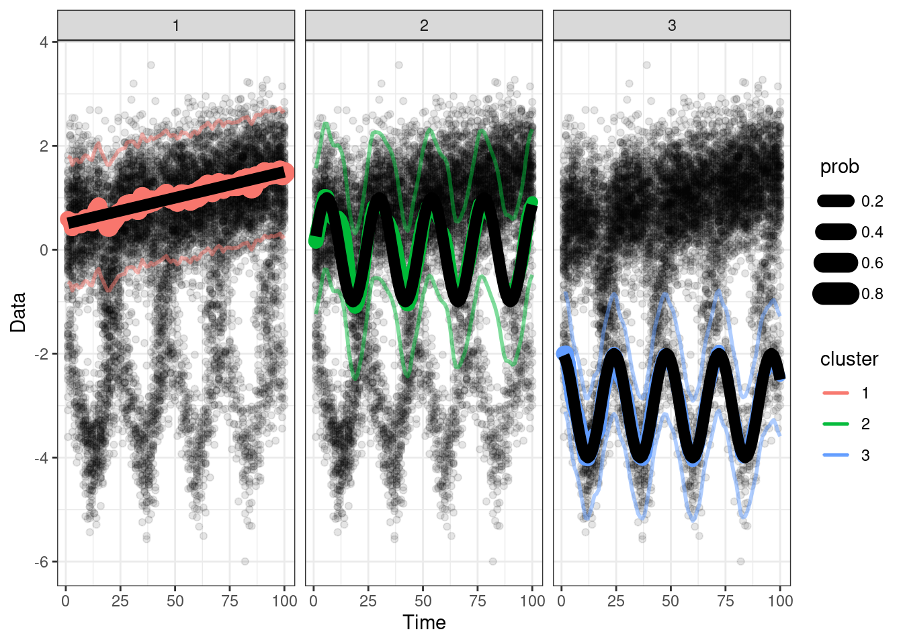
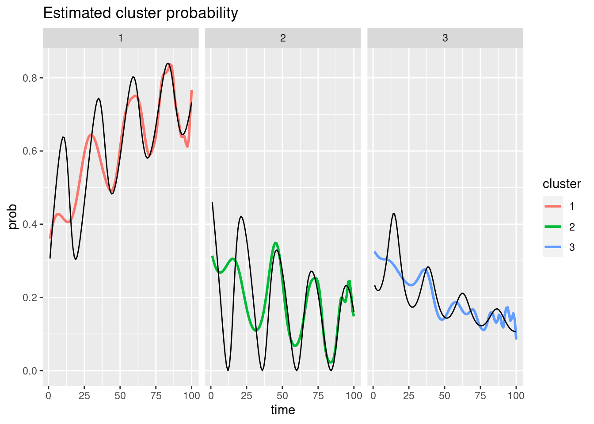

13 2d to 1d
Collapse 2d to 1d data, and plot it.
set.seed(100)
dt <- gendat_2d(100, rep(100, 100))
ylist = dt$ylist
## collapse to 1d
ylist_1d = lapply(ylist, function(a) a[,1, drop = FALSE])
x = 1:length(ylist_1d)
## Data
plot_1d(ylist_1d)
## Fit model
set.seed(100)
obj = flowtrend(ylist = ylist, numclust = 3, l = 2, l_prob = 2,
lambda = .001, lambda_prob = .0001,
verbose = TRUE)
# Also reorder the cluster labels of the truth, to match the fitted model.
ord = obj$mn[,1,] %>% colSums() %>% order(decreasing=TRUE)
lookup <- setNames(c(1:obj$numclust), ord)
dt_model$cluster = lookup[as.numeric(dt_model$cluster)] %>% as.factor()
## Reorder the cluster lables of the fitted model.
obj = reorder_clust(obj)
## Show the estimated model overlaid with data
mns = dt$means %>% .[,,1] %>% reshape2::melt()
colnames(mns) = c("time", "cluster", "mean")
mns = mns %>% as_tibble()
plot_1d(ylist_1d, obj, add_point = FALSE) +
geom_line(aes(x = time, y = mean, group = cluster),
data = mns, size=3) +
facet_wrap(~cluster)
## Plot the probabilities
trueprobs = dt$probs
colnames(trueprobs) = 1:3##paste0("clust", 1:3)
trueprobs = trueprobs %>% as_tibble() %>% add_column(time = 1:nrow(trueprobs))
trueprobs = trueprobs %>% pivot_longer(-time, names_to = "cluster", values_to = "prob")
## Compare the true probabilities
plot_prob(obj) + facet_wrap(~cluster) +
geom_line(aes(x = time, y = prob), data = trueprobs)##, alpha = .5, linetype = "dashed") +
##
EM iterations. 1 out of 999 with lapsed time 0 seconds and remaining time 0 seconds and will finish at 2023-04-19 09:32:13
EM iterations. 2 out of 999 with lapsed time 0 seconds and remaining time 0 seconds and will finish at 2023-04-19 09:32:13
EM iterations. 3 out of 999 with lapsed time 1 seconds and remaining time 332 seconds and will finish at 2023-04-19 09:37:46
EM iterations. 4 out of 999 with lapsed time 1 seconds and remaining time 249 seconds and will finish at 2023-04-19 09:36:23
EM iterations. 5 out of 999 with lapsed time 2 seconds and remaining time 398 seconds and will finish at 2023-04-19 09:38:53
EM iterations. 6 out of 999 with lapsed time 3 seconds and remaining time 496 seconds and will finish at 2023-04-19 09:40:32
EM iterations. 7 out of 999 with lapsed time 4 seconds and remaining time 567 seconds and will finish at 2023-04-19 09:41:44
EM iterations. 8 out of 999 with lapsed time 5 seconds and remaining time 619 seconds and will finish at 2023-04-19 09:42:37
EM iterations. 9 out of 999 with lapsed time 6 seconds and remaining time 660 seconds and will finish at 2023-04-19 09:43:19
EM iterations. 10 out of 999 with lapsed time 7 seconds and remaining time 692 seconds and will finish at 2023-04-19 09:43:52
EM iterations. 11 out of 999 with lapsed time 7 seconds and remaining time 629 seconds and will finish at 2023-04-19 09:42:49
EM iterations. 12 out of 999 with lapsed time 8 seconds and remaining time 658 seconds and will finish at 2023-04-19 09:43:19
EM iterations. 13 out of 999 with lapsed time 9 seconds and remaining time 683 seconds and will finish at 2023-04-19 09:43:45
EM iterations. 14 out of 999 with lapsed time 10 seconds and remaining time 704 seconds and will finish at 2023-04-19 09:44:07
EM iterations. 15 out of 999 with lapsed time 11 seconds and remaining time 722 seconds and will finish at 2023-04-19 09:44:26
EM iterations. 16 out of 999 with lapsed time 11 seconds and remaining time 676 seconds and will finish at 2023-04-19 09:43:40
EM iterations. 17 out of 999 with lapsed time 12 seconds and remaining time 693 seconds and will finish at 2023-04-19 09:43:58
EM iterations. 18 out of 999 with lapsed time 13 seconds and remaining time 708 seconds and will finish at 2023-04-19 09:44:14
EM iterations. 19 out of 999 with lapsed time 14 seconds and remaining time 722 seconds and will finish at 2023-04-19 09:44:29
EM iterations. 20 out of 999 with lapsed time 15 seconds and remaining time 734 seconds and will finish at 2023-04-19 09:44:42
EM iterations. 21 out of 999 with lapsed time 15 seconds and remaining time 699 seconds and will finish at 2023-04-19 09:44:08
EM iterations. 22 out of 999 with lapsed time 16 seconds and remaining time 711 seconds and will finish at 2023-04-19 09:44:20
EM iterations. 23 out of 999 with lapsed time 17 seconds and remaining time 721 seconds and will finish at 2023-04-19 09:44:31
EM iterations. 1 out of 999 with lapsed time 0 seconds and remaining time 0 seconds and will finish at 2023-04-19 09:32:31
EM iterations. 2 out of 999 with lapsed time 0 seconds and remaining time 0 seconds and will finish at 2023-04-19 09:32:32
EM iterations. 3 out of 999 with lapsed time 1 seconds and remaining time 332 seconds and will finish at 2023-04-19 09:38:04
EM iterations. 4 out of 999 with lapsed time 1 seconds and remaining time 249 seconds and will finish at 2023-04-19 09:36:41
EM iterations. 5 out of 999 with lapsed time 2 seconds and remaining time 398 seconds and will finish at 2023-04-19 09:39:11
EM iterations. 6 out of 999 with lapsed time 2 seconds and remaining time 331 seconds and will finish at 2023-04-19 09:38:04
EM iterations. 7 out of 999 with lapsed time 2 seconds and remaining time 283 seconds and will finish at 2023-04-19 09:37:16
EM iterations. 8 out of 999 with lapsed time 3 seconds and remaining time 372 seconds and will finish at 2023-04-19 09:38:46
EM iterations. 9 out of 999 with lapsed time 3 seconds and remaining time 330 seconds and will finish at 2023-04-19 09:38:04
EM iterations. 10 out of 999 with lapsed time 3 seconds and remaining time 297 seconds and will finish at 2023-04-19 09:37:31
EM iterations. 11 out of 999 with lapsed time 3 seconds and remaining time 269 seconds and will finish at 2023-04-19 09:37:04
EM iterations. 12 out of 999 with lapsed time 4 seconds and remaining time 329 seconds and will finish at 2023-04-19 09:38:04
EM iterations. 13 out of 999 with lapsed time 4 seconds and remaining time 303 seconds and will finish at 2023-04-19 09:37:38
EM iterations. 14 out of 999 with lapsed time 4 seconds and remaining time 281 seconds and will finish at 2023-04-19 09:37:16
EM iterations. 15 out of 999 with lapsed time 4 seconds and remaining time 262 seconds and will finish at 2023-04-19 09:36:58
EM iterations. 16 out of 999 with lapsed time 5 seconds and remaining time 307 seconds and will finish at 2023-04-19 09:37:43
EM iterations. 17 out of 999 with lapsed time 5 seconds and remaining time 289 seconds and will finish at 2023-04-19 09:37:25
EM iterations. 18 out of 999 with lapsed time 5 seconds and remaining time 272 seconds and will finish at 2023-04-19 09:37:09
EM iterations. 19 out of 999 with lapsed time 6 seconds and remaining time 309 seconds and will finish at 2023-04-19 09:37:46
EM iterations. 20 out of 999 with lapsed time 6 seconds and remaining time 294 seconds and will finish at 2023-04-19 09:37:31
EM iterations. 21 out of 999 with lapsed time 6 seconds and remaining time 279 seconds and will finish at 2023-04-19 09:37:16
EM iterations. 22 out of 999 with lapsed time 7 seconds and remaining time 311 seconds and will finish at 2023-04-19 09:37:49
EM iterations. 23 out of 999 with lapsed time 7 seconds and remaining time 297 seconds and will finish at 2023-04-19 09:37:35
EM iterations. 24 out of 999 with lapsed time 7 seconds and remaining time 284 seconds and will finish at 2023-04-19 09:37:22
EM iterations. 25 out of 999 with lapsed time 7 seconds and remaining time 273 seconds and will finish at 2023-04-19 09:37:12
EM iterations. 26 out of 999 with lapsed time 8 seconds and remaining time 299 seconds and will finish at 2023-04-19 09:37:38
EM iterations. 27 out of 999 with lapsed time 8 seconds and remaining time 288 seconds and will finish at 2023-04-19 09:37:27
EM iterations. 28 out of 999 with lapsed time 8 seconds and remaining time 277 seconds and will finish at 2023-04-19 09:37:16
EM iterations. 29 out of 999 with lapsed time 9 seconds and remaining time 301 seconds and will finish at 2023-04-19 09:37:41
EM iterations. 30 out of 999 with lapsed time 9 seconds and remaining time 291 seconds and will finish at 2023-04-19 09:37:31
EM iterations. 31 out of 999 with lapsed time 9 seconds and remaining time 281 seconds and will finish at 2023-04-19 09:37:21
EM iterations. 32 out of 999 with lapsed time 9 seconds and remaining time 272 seconds and will finish at 2023-04-19 09:37:13
EM iterations. 33 out of 999 with lapsed time 10 seconds and remaining time 293 seconds and will finish at 2023-04-19 09:37:34
EM iterations. 34 out of 999 with lapsed time 10 seconds and remaining time 284 seconds and will finish at 2023-04-19 09:37:25
EM iterations. 35 out of 999 with lapsed time 10 seconds and remaining time 275 seconds and will finish at 2023-04-19 09:37:16
EM iterations. 36 out of 999 with lapsed time 11 seconds and remaining time 294 seconds and will finish at 2023-04-19 09:37:36
EM iterations. 37 out of 999 with lapsed time 11 seconds and remaining time 286 seconds and will finish at 2023-04-19 09:37:28
EM iterations. 38 out of 999 with lapsed time 11 seconds and remaining time 278 seconds and will finish at 2023-04-19 09:37:21
EM iterations. 39 out of 999 with lapsed time 13 seconds and remaining time 320 seconds and will finish at 2023-04-19 09:38:04
EM iterations. 40 out of 999 with lapsed time 13 seconds and remaining time 312 seconds and will finish at 2023-04-19 09:37:56
EM iterations. 41 out of 999 with lapsed time 14 seconds and remaining time 327 seconds and will finish at 2023-04-19 09:38:12
EM iterations. 42 out of 999 with lapsed time 14 seconds and remaining time 319 seconds and will finish at 2023-04-19 09:38:05
EM iterations. 43 out of 999 with lapsed time 15 seconds and remaining time 333 seconds and will finish at 2023-04-19 09:38:19
EM iterations. 44 out of 999 with lapsed time 15 seconds and remaining time 326 seconds and will finish at 2023-04-19 09:38:12
EM iterations. 45 out of 999 with lapsed time 16 seconds and remaining time 339 seconds and will finish at 2023-04-19 09:38:26
EM iterations. 46 out of 999 with lapsed time 16 seconds and remaining time 331 seconds and will finish at 2023-04-19 09:38:18
EM iterations. 47 out of 999 with lapsed time 17 seconds and remaining time 344 seconds and will finish at 2023-04-19 09:38:32
EM iterations. 48 out of 999 with lapsed time 18 seconds and remaining time 357 seconds and will finish at 2023-04-19 09:38:46
EM iterations. 49 out of 999 with lapsed time 19 seconds and remaining time 368 seconds and will finish at 2023-04-19 09:38:58
EM iterations. 50 out of 999 with lapsed time 19 seconds and remaining time 361 seconds and will finish at 2023-04-19 09:38:51
EM iterations. 51 out of 999 with lapsed time 20 seconds and remaining time 372 seconds and will finish at 2023-04-19 09:39:03
EM iterations. 52 out of 999 with lapsed time 20 seconds and remaining time 364 seconds and will finish at 2023-04-19 09:38:55
EM iterations. 53 out of 999 with lapsed time 21 seconds and remaining time 375 seconds and will finish at 2023-04-19 09:39:07
EM iterations. 54 out of 999 with lapsed time 22 seconds and remaining time 385 seconds and will finish at 2023-04-19 09:39:18
EM iterations. 55 out of 999 with lapsed time 23 seconds and remaining time 395 seconds and will finish at 2023-04-19 09:39:29
EM iterations. 56 out of 999 with lapsed time 24 seconds and remaining time 404 seconds and will finish at 2023-04-19 09:39:39
EM iterations. 57 out of 999 with lapsed time 25 seconds and remaining time 413 seconds and will finish at 2023-04-19 09:39:50
EM iterations. 58 out of 999 with lapsed time 26 seconds and remaining time 422 seconds and will finish at 2023-04-19 09:40:00
EM iterations. 59 out of 999 with lapsed time 27 seconds and remaining time 430 seconds and will finish at 2023-04-19 09:40:09
EM iterations. 1 out of 999 with lapsed time 0 seconds and remaining time 0 seconds and will finish at 2023-04-19 09:33:00
EM iterations. 2 out of 999 with lapsed time 1 seconds and remaining time 498 seconds and will finish at 2023-04-19 09:41:18
EM iterations. 3 out of 999 with lapsed time 2 seconds and remaining time 664 seconds and will finish at 2023-04-19 09:44:05
EM iterations. 4 out of 999 with lapsed time 2 seconds and remaining time 498 seconds and will finish at 2023-04-19 09:41:20
EM iterations. 5 out of 999 with lapsed time 3 seconds and remaining time 596 seconds and will finish at 2023-04-19 09:42:59
EM iterations. 6 out of 999 with lapsed time 4 seconds and remaining time 662 seconds and will finish at 2023-04-19 09:44:06
EM iterations. 7 out of 999 with lapsed time 5 seconds and remaining time 709 seconds and will finish at 2023-04-19 09:44:53
EM iterations. 8 out of 999 with lapsed time 5 seconds and remaining time 619 seconds and will finish at 2023-04-19 09:43:24
EM iterations. 1 out of 999 with lapsed time 0 seconds and remaining time 0 seconds and will finish at 2023-04-19 09:33:06
EM iterations. 2 out of 999 with lapsed time 0 seconds and remaining time 0 seconds and will finish at 2023-04-19 09:33:06
EM iterations. 3 out of 999 with lapsed time 1 seconds and remaining time 332 seconds and will finish at 2023-04-19 09:38:39
EM iterations. 4 out of 999 with lapsed time 1 seconds and remaining time 249 seconds and will finish at 2023-04-19 09:37:16
EM iterations. 5 out of 999 with lapsed time 1 seconds and remaining time 199 seconds and will finish at 2023-04-19 09:36:26
EM iterations. 6 out of 999 with lapsed time 2 seconds and remaining time 331 seconds and will finish at 2023-04-19 09:38:39
EM iterations. 7 out of 999 with lapsed time 2 seconds and remaining time 283 seconds and will finish at 2023-04-19 09:37:51
EM iterations. 8 out of 999 with lapsed time 2 seconds and remaining time 248 seconds and will finish at 2023-04-19 09:37:16
EM iterations. 9 out of 999 with lapsed time 3 seconds and remaining time 330 seconds and will finish at 2023-04-19 09:38:39
EM iterations. 10 out of 999 with lapsed time 3 seconds and remaining time 297 seconds and will finish at 2023-04-19 09:38:06
EM iterations. 11 out of 999 with lapsed time 4 seconds and remaining time 359 seconds and will finish at 2023-04-19 09:39:09
EM iterations. 12 out of 999 with lapsed time 5 seconds and remaining time 411 seconds and will finish at 2023-04-19 09:40:02
EM iterations. 13 out of 999 with lapsed time 5 seconds and remaining time 379 seconds and will finish at 2023-04-19 09:39:30
EM iterations. 14 out of 999 with lapsed time 6 seconds and remaining time 422 seconds and will finish at 2023-04-19 09:40:14
EM iterations. 15 out of 999 with lapsed time 7 seconds and remaining time 459 seconds and will finish at 2023-04-19 09:40:52
EM iterations. 16 out of 999 with lapsed time 8 seconds and remaining time 492 seconds and will finish at 2023-04-19 09:41:26
EM iterations. 17 out of 999 with lapsed time 9 seconds and remaining time 520 seconds and will finish at 2023-04-19 09:41:55
EM iterations. 18 out of 999 with lapsed time 10 seconds and remaining time 545 seconds and will finish at 2023-04-19 09:42:21
EM iterations. 19 out of 999 with lapsed time 11 seconds and remaining time 567 seconds and will finish at 2023-04-19 09:42:44
EM iterations. 20 out of 999 with lapsed time 11 seconds and remaining time 538 seconds and will finish at 2023-04-19 09:42:15
EM iterations. 21 out of 999 with lapsed time 12 seconds and remaining time 559 seconds and will finish at 2023-04-19 09:42:37
EM iterations. 22 out of 999 with lapsed time 13 seconds and remaining time 577 seconds and will finish at 2023-04-19 09:42:56
EM iterations. 23 out of 999 with lapsed time 14 seconds and remaining time 594 seconds and will finish at 2023-04-19 09:43:14
EM iterations. 1 out of 999 with lapsed time 0 seconds and remaining time 0 seconds and will finish at 2023-04-19 09:33:20
EM iterations. 2 out of 999 with lapsed time 0 seconds and remaining time 0 seconds and will finish at 2023-04-19 09:33:21
EM iterations. 3 out of 999 with lapsed time 1 seconds and remaining time 332 seconds and will finish at 2023-04-19 09:38:53
EM iterations. 4 out of 999 with lapsed time 3 seconds and remaining time 746 seconds and will finish at 2023-04-19 09:45:49
EM iterations. 5 out of 999 with lapsed time 5 seconds and remaining time 994 seconds and will finish at 2023-04-19 09:49:59
EM iterations. 6 out of 999 with lapsed time 7 seconds and remaining time 1158 seconds and will finish at 2023-04-19 09:52:45
EM iterations. 7 out of 999 with lapsed time 7 seconds and remaining time 992 seconds and will finish at 2023-04-19 09:50:00
EM iterations. 8 out of 999 with lapsed time 8 seconds and remaining time 991 seconds and will finish at 2023-04-19 09:49:59
EM iterations. 9 out of 999 with lapsed time 9 seconds and remaining time 990 seconds and will finish at 2023-04-19 09:49:59
EM iterations. 10 out of 999 with lapsed time 11 seconds and remaining time 1088 seconds and will finish at 2023-04-19 09:51:39
EM iterations. 11 out of 999 with lapsed time 13 seconds and remaining time 1168 seconds and will finish at 2023-04-19 09:53:01
EM iterations. 12 out of 999 with lapsed time 16 seconds and remaining time 1316 seconds and will finish at 2023-04-19 09:55:32
EM iterations. 13 out of 999 with lapsed time 17 seconds and remaining time 1289 seconds and will finish at 2023-04-19 09:55:06
EM iterations. 14 out of 999 with lapsed time 19 seconds and remaining time 1337 seconds and will finish at 2023-04-19 09:55:56
EM iterations. 15 out of 999 with lapsed time 20 seconds and remaining time 1312 seconds and will finish at 2023-04-19 09:55:33
EM iterations. 16 out of 999 with lapsed time 22 seconds and remaining time 1352 seconds and will finish at 2023-04-19 09:56:15
EM iterations. 17 out of 999 with lapsed time 24 seconds and remaining time 1386 seconds and will finish at 2023-04-19 09:56:50
EM iterations. 18 out of 999 with lapsed time 24 seconds and remaining time 1308 seconds and will finish at 2023-04-19 09:55:33
EM iterations. 19 out of 999 with lapsed time 25 seconds and remaining time 1289 seconds and will finish at 2023-04-19 09:55:15
EM iterations. 20 out of 999 with lapsed time 26 seconds and remaining time 1273 seconds and will finish at 2023-04-19 09:55:00
EM iterations. 21 out of 999 with lapsed time 28 seconds and remaining time 1304 seconds and will finish at 2023-04-19 09:55:32
EM iterations. 22 out of 999 with lapsed time 28 seconds and remaining time 1243 seconds and will finish at 2023-04-19 09:54:32
EM iterations. 23 out of 999 with lapsed time 29 seconds and remaining time 1231 seconds and will finish at 2023-04-19 09:54:20
EM iterations. 24 out of 999 with lapsed time 29 seconds and remaining time 1178 seconds and will finish at 2023-04-19 09:53:28
EM iterations. 25 out of 999 with lapsed time 30 seconds and remaining time 1169 seconds and will finish at 2023-04-19 09:53:19
EM iterations. 26 out of 999 with lapsed time 31 seconds and remaining time 1160 seconds and will finish at 2023-04-19 09:53:11
EM iterations. 27 out of 999 with lapsed time 31 seconds and remaining time 1116 seconds and will finish at 2023-04-19 09:52:28
EM iterations. 28 out of 999 with lapsed time 32 seconds and remaining time 1110 seconds and will finish at 2023-04-19 09:52:22
EM iterations. 29 out of 999 with lapsed time 33 seconds and remaining time 1104 seconds and will finish at 2023-04-19 09:52:17
EM iterations. 30 out of 999 with lapsed time 33 seconds and remaining time 1066 seconds and will finish at 2023-04-19 09:51:40
EM iterations. 31 out of 999 with lapsed time 34 seconds and remaining time 1062 seconds and will finish at 2023-04-19 09:51:36
EM iterations. 1 out of 999 with lapsed time 0 seconds and remaining time 0 seconds and will finish at 2023-04-19 09:33:55
EM iterations. 2 out of 999 with lapsed time 0 seconds and remaining time 0 seconds and will finish at 2023-04-19 09:33:56
EM iterations. 3 out of 999 with lapsed time 1 seconds and remaining time 332 seconds and will finish at 2023-04-19 09:39:28
EM iterations. 4 out of 999 with lapsed time 1 seconds and remaining time 249 seconds and will finish at 2023-04-19 09:38:06
EM iterations. 5 out of 999 with lapsed time 2 seconds and remaining time 398 seconds and will finish at 2023-04-19 09:40:35
EM iterations. 6 out of 999 with lapsed time 3 seconds and remaining time 496 seconds and will finish at 2023-04-19 09:42:14
EM iterations. 7 out of 999 with lapsed time 3 seconds and remaining time 425 seconds and will finish at 2023-04-19 09:41:03
EM iterations. 8 out of 999 with lapsed time 4 seconds and remaining time 496 seconds and will finish at 2023-04-19 09:42:15
EM iterations. 9 out of 999 with lapsed time 4 seconds and remaining time 440 seconds and will finish at 2023-04-19 09:41:19
EM iterations. 10 out of 999 with lapsed time 5 seconds and remaining time 494 seconds and will finish at 2023-04-19 09:42:14
EM iterations. 11 out of 999 with lapsed time 5 seconds and remaining time 449 seconds and will finish at 2023-04-19 09:41:29
EM iterations. 12 out of 999 with lapsed time 6 seconds and remaining time 494 seconds and will finish at 2023-04-19 09:42:15
EM iterations. 13 out of 999 with lapsed time 6 seconds and remaining time 455 seconds and will finish at 2023-04-19 09:41:36
EM iterations. 14 out of 999 with lapsed time 7 seconds and remaining time 492 seconds and will finish at 2023-04-19 09:42:14
EM iterations. 15 out of 999 with lapsed time 8 seconds and remaining time 525 seconds and will finish at 2023-04-19 09:42:48
EM iterations. 16 out of 999 with lapsed time 9 seconds and remaining time 553 seconds and will finish at 2023-04-19 09:43:17
EM iterations. 17 out of 999 with lapsed time 9 seconds and remaining time 520 seconds and will finish at 2023-04-19 09:42:45
EM iterations. 18 out of 999 with lapsed time 10 seconds and remaining time 545 seconds and will finish at 2023-04-19 09:43:10
EM iterations. 19 out of 999 with lapsed time 11 seconds and remaining time 567 seconds and will finish at 2023-04-19 09:43:33
EM iterations. 20 out of 999 with lapsed time 11 seconds and remaining time 538 seconds and will finish at 2023-04-19 09:43:04
EM iterations. 21 out of 999 with lapsed time 12 seconds and remaining time 559 seconds and will finish at 2023-04-19 09:43:26
EM iterations. 22 out of 999 with lapsed time 12 seconds and remaining time 533 seconds and will finish at 2023-04-19 09:43:00
EM iterations. 23 out of 999 with lapsed time 13 seconds and remaining time 552 seconds and will finish at 2023-04-19 09:43:20
EM iterations. 1 out of 999 with lapsed time 0 seconds and remaining time 0 seconds and will finish at 2023-04-19 09:34:08
EM iterations. 2 out of 999 with lapsed time 1 seconds and remaining time 498 seconds and will finish at 2023-04-19 09:42:28
EM iterations. 3 out of 999 with lapsed time 2 seconds and remaining time 664 seconds and will finish at 2023-04-19 09:45:15
EM iterations. 4 out of 999 with lapsed time 3 seconds and remaining time 746 seconds and will finish at 2023-04-19 09:46:37
EM iterations. 5 out of 999 with lapsed time 4 seconds and remaining time 795 seconds and will finish at 2023-04-19 09:47:27
EM iterations. 6 out of 999 with lapsed time 5 seconds and remaining time 828 seconds and will finish at 2023-04-19 09:48:01
EM iterations. 7 out of 999 with lapsed time 5 seconds and remaining time 709 seconds and will finish at 2023-04-19 09:46:03
EM iterations. 8 out of 999 with lapsed time 6 seconds and remaining time 743 seconds and will finish at 2023-04-19 09:46:37
EM iterations. 9 out of 999 with lapsed time 7 seconds and remaining time 770 seconds and will finish at 2023-04-19 09:47:05
EM iterations. 10 out of 999 with lapsed time 7 seconds and remaining time 692 seconds and will finish at 2023-04-19 09:45:47
EM iterations. 11 out of 999 with lapsed time 8 seconds and remaining time 719 seconds and will finish at 2023-04-19 09:46:15
EM iterations. 12 out of 999 with lapsed time 8 seconds and remaining time 658 seconds and will finish at 2023-04-19 09:45:15
EM iterations. 13 out of 999 with lapsed time 9 seconds and remaining time 683 seconds and will finish at 2023-04-19 09:45:40
EM iterations. 14 out of 999 with lapsed time 10 seconds and remaining time 704 seconds and will finish at 2023-04-19 09:46:02
EM iterations. 15 out of 999 with lapsed time 10 seconds and remaining time 656 seconds and will finish at 2023-04-19 09:45:14
EM iterations. 16 out of 999 with lapsed time 11 seconds and remaining time 676 seconds and will finish at 2023-04-19 09:45:35
EM iterations. 17 out of 999 with lapsed time 11 seconds and remaining time 635 seconds and will finish at 2023-04-19 09:44:54
EM iterations. 1 out of 999 with lapsed time 0 seconds and remaining time 0 seconds and will finish at 2023-04-19 09:34:20
EM iterations. 2 out of 999 with lapsed time 1 seconds and remaining time 498 seconds and will finish at 2023-04-19 09:42:39
EM iterations. 3 out of 999 with lapsed time 3 seconds and remaining time 996 seconds and will finish at 2023-04-19 09:50:59
EM iterations. 4 out of 999 with lapsed time 4 seconds and remaining time 995 seconds and will finish at 2023-04-19 09:50:59
EM iterations. 5 out of 999 with lapsed time 5 seconds and remaining time 994 seconds and will finish at 2023-04-19 09:50:59
EM iterations. 6 out of 999 with lapsed time 6 seconds and remaining time 993 seconds and will finish at 2023-04-19 09:51:00
EM iterations. 7 out of 999 with lapsed time 7 seconds and remaining time 992 seconds and will finish at 2023-04-19 09:51:00
EM iterations. 8 out of 999 with lapsed time 8 seconds and remaining time 991 seconds and will finish at 2023-04-19 09:51:00
EM iterations. 9 out of 999 with lapsed time 9 seconds and remaining time 990 seconds and will finish at 2023-04-19 09:51:00
EM iterations. 10 out of 999 with lapsed time 10 seconds and remaining time 989 seconds and will finish at 2023-04-19 09:50:59
EM iterations. 11 out of 999 with lapsed time 11 seconds and remaining time 988 seconds and will finish at 2023-04-19 09:50:59
EM iterations. 12 out of 999 with lapsed time 12 seconds and remaining time 987 seconds and will finish at 2023-04-19 09:50:59
EM iterations. 13 out of 999 with lapsed time 13 seconds and remaining time 986 seconds and will finish at 2023-04-19 09:50:59
EM iterations. 14 out of 999 with lapsed time 14 seconds and remaining time 985 seconds and will finish at 2023-04-19 09:50:59
EM iterations. 15 out of 999 with lapsed time 14 seconds and remaining time 918 seconds and will finish at 2023-04-19 09:49:53
EM iterations. 16 out of 999 with lapsed time 15 seconds and remaining time 922 seconds and will finish at 2023-04-19 09:49:57
EM iterations. 17 out of 999 with lapsed time 16 seconds and remaining time 924 seconds and will finish at 2023-04-19 09:50:00
EM iterations. 18 out of 999 with lapsed time 16 seconds and remaining time 872 seconds and will finish at 2023-04-19 09:49:09
EM iterations. 19 out of 999 with lapsed time 17 seconds and remaining time 877 seconds and will finish at 2023-04-19 09:49:14
EM iterations. 20 out of 999 with lapsed time 18 seconds and remaining time 881 seconds and will finish at 2023-04-19 09:49:19
EM iterations. 21 out of 999 with lapsed time 19 seconds and remaining time 885 seconds and will finish at 2023-04-19 09:49:24
EM iterations. 22 out of 999 with lapsed time 19 seconds and remaining time 844 seconds and will finish at 2023-04-19 09:48:43
EM iterations. 23 out of 999 with lapsed time 20 seconds and remaining time 849 seconds and will finish at 2023-04-19 09:48:49
EM iterations. 24 out of 999 with lapsed time 20 seconds and remaining time 812 seconds and will finish at 2023-04-19 09:48:12
EM iterations. 25 out of 999 with lapsed time 20 seconds and remaining time 779 seconds and will finish at 2023-04-19 09:47:39
EM iterations. 26 out of 999 with lapsed time 21 seconds and remaining time 786 seconds and will finish at 2023-04-19 09:47:47
EM iterations. 27 out of 999 with lapsed time 21 seconds and remaining time 756 seconds and will finish at 2023-04-19 09:47:17
EM iterations. 28 out of 999 with lapsed time 21 seconds and remaining time 728 seconds and will finish at 2023-04-19 09:46:50
EM iterations. 29 out of 999 with lapsed time 22 seconds and remaining time 736 seconds and will finish at 2023-04-19 09:46:58
EM iterations. 30 out of 999 with lapsed time 22 seconds and remaining time 711 seconds and will finish at 2023-04-19 09:46:33
EM iterations. 31 out of 999 with lapsed time 23 seconds and remaining time 718 seconds and will finish at 2023-04-19 09:46:41
EM iterations. 32 out of 999 with lapsed time 23 seconds and remaining time 695 seconds and will finish at 2023-04-19 09:46:18
EM iterations. 33 out of 999 with lapsed time 23 seconds and remaining time 673 seconds and will finish at 2023-04-19 09:45:57
EM iterations. 34 out of 999 with lapsed time 24 seconds and remaining time 681 seconds and will finish at 2023-04-19 09:46:05
EM iterations. 35 out of 999 with lapsed time 25 seconds and remaining time 689 seconds and will finish at 2023-04-19 09:46:14
EM iterations. 36 out of 999 with lapsed time 25 seconds and remaining time 669 seconds and will finish at 2023-04-19 09:45:54
EM iterations. 37 out of 999 with lapsed time 25 seconds and remaining time 650 seconds and will finish at 2023-04-19 09:45:36
EM iterations. 38 out of 999 with lapsed time 26 seconds and remaining time 658 seconds and will finish at 2023-04-19 09:45:44
EM iterations. 39 out of 999 with lapsed time 26 seconds and remaining time 640 seconds and will finish at 2023-04-19 09:45:26
EM iterations. 40 out of 999 with lapsed time 27 seconds and remaining time 647 seconds and will finish at 2023-04-19 09:45:34
EM iterations. 41 out of 999 with lapsed time 27 seconds and remaining time 631 seconds and will finish at 2023-04-19 09:45:18
EM iterations. 42 out of 999 with lapsed time 27 seconds and remaining time 615 seconds and will finish at 2023-04-19 09:45:02
EM iterations. 43 out of 999 with lapsed time 28 seconds and remaining time 623 seconds and will finish at 2023-04-19 09:45:11
EM iterations. 44 out of 999 with lapsed time 28 seconds and remaining time 608 seconds and will finish at 2023-04-19 09:44:56
EM iterations. 45 out of 999 with lapsed time 28 seconds and remaining time 594 seconds and will finish at 2023-04-19 09:44:42
EM iterations. 46 out of 999 with lapsed time 29 seconds and remaining time 601 seconds and will finish at 2023-04-19 09:44:50
EM iterations. 47 out of 999 with lapsed time 29 seconds and remaining time 587 seconds and will finish at 2023-04-19 09:44:36
EM iterations. 48 out of 999 with lapsed time 29 seconds and remaining time 575 seconds and will finish at 2023-04-19 09:44:24
EM iterations. 49 out of 999 with lapsed time 30 seconds and remaining time 582 seconds and will finish at 2023-04-19 09:44:32
EM iterations. 50 out of 999 with lapsed time 30 seconds and remaining time 569 seconds and will finish at 2023-04-19 09:44:19
EM iterations. 51 out of 999 with lapsed time 31 seconds and remaining time 576 seconds and will finish at 2023-04-19 09:44:27
EM iterations. 52 out of 999 with lapsed time 32 seconds and remaining time 583 seconds and will finish at 2023-04-19 09:44:35
EM iterations. 53 out of 999 with lapsed time 33 seconds and remaining time 589 seconds and will finish at 2023-04-19 09:44:42
EM iterations. 54 out of 999 with lapsed time 34 seconds and remaining time 595 seconds and will finish at 2023-04-19 09:44:49
EM iterations. 55 out of 999 with lapsed time 35 seconds and remaining time 601 seconds and will finish at 2023-04-19 09:44:56
EM iterations. 56 out of 999 with lapsed time 36 seconds and remaining time 606 seconds and will finish at 2023-04-19 09:45:02
EM iterations. 57 out of 999 with lapsed time 37 seconds and remaining time 611 seconds and will finish at 2023-04-19 09:45:08
EM iterations. 58 out of 999 with lapsed time 38 seconds and remaining time 617 seconds and will finish at 2023-04-19 09:45:15
EM iterations. 59 out of 999 with lapsed time 39 seconds and remaining time 621 seconds and will finish at 2023-04-19 09:45:20
EM iterations. 60 out of 999 with lapsed time 40 seconds and remaining time 626 seconds and will finish at 2023-04-19 09:45:26
EM iterations. 61 out of 999 with lapsed time 41 seconds and remaining time 630 seconds and will finish at 2023-04-19 09:45:32
EM iterations. 62 out of 999 with lapsed time 42 seconds and remaining time 635 seconds and will finish at 2023-04-19 09:45:38
EM iterations. 63 out of 999 with lapsed time 43 seconds and remaining time 639 seconds and will finish at 2023-04-19 09:45:42
EM iterations. 64 out of 999 with lapsed time 43 seconds and remaining time 628 seconds and will finish at 2023-04-19 09:45:31
EM iterations. 65 out of 999 with lapsed time 44 seconds and remaining time 632 seconds and will finish at 2023-04-19 09:45:36
EM iterations. 66 out of 999 with lapsed time 44 seconds and remaining time 622 seconds and will finish at 2023-04-19 09:45:26
EM iterations. 67 out of 999 with lapsed time 44 seconds and remaining time 612 seconds and will finish at 2023-04-19 09:45:17
EM iterations. 68 out of 999 with lapsed time 45 seconds and remaining time 616 seconds and will finish at 2023-04-19 09:45:21
EM iterations. 69 out of 999 with lapsed time 45 seconds and remaining time 607 seconds and will finish at 2023-04-19 09:45:12
EM iterations. 70 out of 999 with lapsed time 45 seconds and remaining time 597 seconds and will finish at 2023-04-19 09:45:03
EM iterations. 71 out of 999 with lapsed time 46 seconds and remaining time 601 seconds and will finish at 2023-04-19 09:45:07
EM iterations. 72 out of 999 with lapsed time 46 seconds and remaining time 592 seconds and will finish at 2023-04-19 09:44:58
EM iterations. 73 out of 999 with lapsed time 47 seconds and remaining time 596 seconds and will finish at 2023-04-19 09:45:03
EM iterations. 74 out of 999 with lapsed time 47 seconds and remaining time 588 seconds and will finish at 2023-04-19 09:44:55
EM iterations. 75 out of 999 with lapsed time 47 seconds and remaining time 579 seconds and will finish at 2023-04-19 09:44:46
EM iterations. 76 out of 999 with lapsed time 48 seconds and remaining time 583 seconds and will finish at 2023-04-19 09:44:51
EM iterations. 77 out of 999 with lapsed time 48 seconds and remaining time 575 seconds and will finish at 2023-04-19 09:44:43
EM iterations. 78 out of 999 with lapsed time 49 seconds and remaining time 579 seconds and will finish at 2023-04-19 09:44:48
EM iterations. 79 out of 999 with lapsed time 49 seconds and remaining time 571 seconds and will finish at 2023-04-19 09:44:40
EM iterations. 80 out of 999 with lapsed time 50 seconds and remaining time 574 seconds and will finish at 2023-04-19 09:44:44
EM iterations. 81 out of 999 with lapsed time 50 seconds and remaining time 567 seconds and will finish at 2023-04-19 09:44:37
EM iterations. 82 out of 999 with lapsed time 51 seconds and remaining time 570 seconds and will finish at 2023-04-19 09:44:41
EM iterations. 83 out of 999 with lapsed time 51 seconds and remaining time 563 seconds and will finish at 2023-04-19 09:44:34
EM iterations. 84 out of 999 with lapsed time 52 seconds and remaining time 566 seconds and will finish at 2023-04-19 09:44:38
EM iterations. 85 out of 999 with lapsed time 52 seconds and remaining time 559 seconds and will finish at 2023-04-19 09:44:31
EM iterations. 86 out of 999 with lapsed time 53 seconds and remaining time 563 seconds and will finish at 2023-04-19 09:44:36
EM iterations. 87 out of 999 with lapsed time 53 seconds and remaining time 556 seconds and will finish at 2023-04-19 09:44:29
EM iterations. 88 out of 999 with lapsed time 54 seconds and remaining time 559 seconds and will finish at 2023-04-19 09:44:33
EM iterations. 89 out of 999 with lapsed time 54 seconds and remaining time 552 seconds and will finish at 2023-04-19 09:44:26
EM iterations. 90 out of 999 with lapsed time 55 seconds and remaining time 556 seconds and will finish at 2023-04-19 09:44:31
EM iterations. 91 out of 999 with lapsed time 55 seconds and remaining time 549 seconds and will finish at 2023-04-19 09:44:24
EM iterations. 92 out of 999 with lapsed time 56 seconds and remaining time 552 seconds and will finish at 2023-04-19 09:44:28
EM iterations. 93 out of 999 with lapsed time 56 seconds and remaining time 546 seconds and will finish at 2023-04-19 09:44:22
EM iterations. 94 out of 999 with lapsed time 57 seconds and remaining time 549 seconds and will finish at 2023-04-19 09:44:26
EM iterations. 95 out of 999 with lapsed time 57 seconds and remaining time 542 seconds and will finish at 2023-04-19 09:44:19
EM iterations. 1 out of 999 with lapsed time 0 seconds and remaining time 0 seconds and will finish at 2023-04-19 09:35:18
EM iterations. 2 out of 999 with lapsed time 0 seconds and remaining time 0 seconds and will finish at 2023-04-19 09:35:19
EM iterations. 3 out of 999 with lapsed time 1 seconds and remaining time 332 seconds and will finish at 2023-04-19 09:40:51
EM iterations. 4 out of 999 with lapsed time 1 seconds and remaining time 249 seconds and will finish at 2023-04-19 09:39:28
EM iterations. 5 out of 999 with lapsed time 2 seconds and remaining time 398 seconds and will finish at 2023-04-19 09:41:58
EM iterations. 6 out of 999 with lapsed time 2 seconds and remaining time 331 seconds and will finish at 2023-04-19 09:40:51
EM iterations. 7 out of 999 with lapsed time 2 seconds and remaining time 283 seconds and will finish at 2023-04-19 09:40:04
EM iterations. 8 out of 999 with lapsed time 3 seconds and remaining time 372 seconds and will finish at 2023-04-19 09:41:33
EM iterations. 9 out of 999 with lapsed time 3 seconds and remaining time 330 seconds and will finish at 2023-04-19 09:40:51
EM iterations. 10 out of 999 with lapsed time 4 seconds and remaining time 396 seconds and will finish at 2023-04-19 09:41:58
EM iterations. 11 out of 999 with lapsed time 4 seconds and remaining time 359 seconds and will finish at 2023-04-19 09:41:21
EM iterations. 12 out of 999 with lapsed time 5 seconds and remaining time 411 seconds and will finish at 2023-04-19 09:42:14
EM iterations. 13 out of 999 with lapsed time 5 seconds and remaining time 379 seconds and will finish at 2023-04-19 09:41:42
EM iterations. 14 out of 999 with lapsed time 6 seconds and remaining time 422 seconds and will finish at 2023-04-19 09:42:26
EM iterations. 15 out of 999 with lapsed time 6 seconds and remaining time 394 seconds and will finish at 2023-04-19 09:41:58
EM iterations. 16 out of 999 with lapsed time 7 seconds and remaining time 430 seconds and will finish at 2023-04-19 09:42:35
EM iterations. 17 out of 999 with lapsed time 7 seconds and remaining time 404 seconds and will finish at 2023-04-19 09:42:09
EM iterations. 18 out of 999 with lapsed time 8 seconds and remaining time 436 seconds and will finish at 2023-04-19 09:42:42
EM iterations. 19 out of 999 with lapsed time 8 seconds and remaining time 413 seconds and will finish at 2023-04-19 09:42:20
EM iterations. 20 out of 999 with lapsed time 9 seconds and remaining time 441 seconds and will finish at 2023-04-19 09:42:48
EM iterations. 21 out of 999 with lapsed time 10 seconds and remaining time 466 seconds and will finish at 2023-04-19 09:43:14
EM iterations. 22 out of 999 with lapsed time 10 seconds and remaining time 444 seconds and will finish at 2023-04-19 09:42:53
EM iterations. 23 out of 999 with lapsed time 11 seconds and remaining time 467 seconds and will finish at 2023-04-19 09:43:16
EM iterations. 24 out of 999 with lapsed time 12 seconds and remaining time 488 seconds and will finish at 2023-04-19 09:43:38
EM iterations. 25 out of 999 with lapsed time 13 seconds and remaining time 506 seconds and will finish at 2023-04-19 09:43:57
EM iterations. 26 out of 999 with lapsed time 13 seconds and remaining time 486 seconds and will finish at 2023-04-19 09:43:37
EM iterations. 27 out of 999 with lapsed time 14 seconds and remaining time 504 seconds and will finish at 2023-04-19 09:43:56
EM iterations. 28 out of 999 with lapsed time 15 seconds and remaining time 520 seconds and will finish at 2023-04-19 09:44:13
EM iterations. 29 out of 999 with lapsed time 16 seconds and remaining time 535 seconds and will finish at 2023-04-19 09:44:29
EM iterations. 30 out of 999 with lapsed time 17 seconds and remaining time 549 seconds and will finish at 2023-04-19 09:44:44
EM iterations. 31 out of 999 with lapsed time 17 seconds and remaining time 531 seconds and will finish at 2023-04-19 09:44:27
EM iterations. 32 out of 999 with lapsed time 20 seconds and remaining time 604 seconds and will finish at 2023-04-19 09:45:42
EM iterations. 33 out of 999 with lapsed time 22 seconds and remaining time 644 seconds and will finish at 2023-04-19 09:46:24
EM iterations. 34 out of 999 with lapsed time 25 seconds and remaining time 710 seconds and will finish at 2023-04-19 09:47:33
EM iterations. 35 out of 999 with lapsed time 28 seconds and remaining time 771 seconds and will finish at 2023-04-19 09:48:37
EM iterations. 36 out of 999 with lapsed time 31 seconds and remaining time 829 seconds and will finish at 2023-04-19 09:49:38
EM iterations. 37 out of 999 with lapsed time 35 seconds and remaining time 910 seconds and will finish at 2023-04-19 09:51:03
EM iterations. 38 out of 999 with lapsed time 39 seconds and remaining time 986 seconds and will finish at 2023-04-19 09:52:23
EM iterations. 39 out of 999 with lapsed time 42 seconds and remaining time 1034 seconds and will finish at 2023-04-19 09:53:14
EM iterations. 40 out of 999 with lapsed time 46 seconds and remaining time 1103 seconds and will finish at 2023-04-19 09:54:27
EM iterations. 41 out of 999 with lapsed time 50 seconds and remaining time 1168 seconds and will finish at 2023-04-19 09:55:36
EM iterations. 42 out of 999 with lapsed time 53 seconds and remaining time 1208 seconds and will finish at 2023-04-19 09:56:19
EM iterations. 43 out of 999 with lapsed time 57 seconds and remaining time 1267 seconds and will finish at 2023-04-19 09:57:22
EM iterations. 44 out of 999 with lapsed time 61 seconds and remaining time 1324 seconds and will finish at 2023-04-19 09:58:23
EM iterations. 45 out of 999 with lapsed time 65 seconds and remaining time 1378 seconds and will finish at 2023-04-19 09:59:21
EM iterations. 46 out of 999 with lapsed time 69 seconds and remaining time 1430 seconds and will finish at 2023-04-19 10:00:17
EM iterations. 47 out of 999 with lapsed time 72 seconds and remaining time 1458 seconds and will finish at 2023-04-19 10:00:49
EM iterations. 48 out of 999 with lapsed time 76 seconds and remaining time 1506 seconds and will finish at 2023-04-19 10:01:40
EM iterations. 49 out of 999 with lapsed time 80 seconds and remaining time 1551 seconds and will finish at 2023-04-19 10:02:29
EM iterations. 50 out of 999 with lapsed time 83 seconds and remaining time 1575 seconds and will finish at 2023-04-19 10:02:57
EM iterations. 51 out of 999 with lapsed time 87 seconds and remaining time 1617 seconds and will finish at 2023-04-19 10:03:42
EM iterations. 52 out of 999 with lapsed time 91 seconds and remaining time 1657 seconds and will finish at 2023-04-19 10:04:26
EM iterations. 53 out of 999 with lapsed time 94 seconds and remaining time 1678 seconds and will finish at 2023-04-19 10:04:50
EM iterations. 54 out of 999 with lapsed time 98 seconds and remaining time 1715 seconds and will finish at 2023-04-19 10:05:31
EM iterations. 55 out of 999 with lapsed time 103 seconds and remaining time 1768 seconds and will finish at 2023-04-19 10:06:29
EM iterations. 56 out of 999 with lapsed time 108 seconds and remaining time 1819 seconds and will finish at 2023-04-19 10:07:25
EM iterations. 57 out of 999 with lapsed time 112 seconds and remaining time 1851 seconds and will finish at 2023-04-19 10:08:01
EM iterations. 1 out of 999 with lapsed time 0 seconds and remaining time 0 seconds and will finish at 2023-04-19 09:37:15
EM iterations. 2 out of 999 with lapsed time 1 seconds and remaining time 498 seconds and will finish at 2023-04-19 09:45:34
EM iterations. 3 out of 999 with lapsed time 2 seconds and remaining time 664 seconds and will finish at 2023-04-19 09:48:21
EM iterations. 4 out of 999 with lapsed time 3 seconds and remaining time 746 seconds and will finish at 2023-04-19 09:49:44
EM iterations. 5 out of 999 with lapsed time 3 seconds and remaining time 596 seconds and will finish at 2023-04-19 09:47:14
EM iterations. 6 out of 999 with lapsed time 4 seconds and remaining time 662 seconds and will finish at 2023-04-19 09:48:21
EM iterations. 7 out of 999 with lapsed time 4 seconds and remaining time 567 seconds and will finish at 2023-04-19 09:46:46
EM iterations. 8 out of 999 with lapsed time 5 seconds and remaining time 619 seconds and will finish at 2023-04-19 09:47:39
EM iterations. 9 out of 999 with lapsed time 6 seconds and remaining time 660 seconds and will finish at 2023-04-19 09:48:21
EM iterations. 10 out of 999 with lapsed time 6 seconds and remaining time 593 seconds and will finish at 2023-04-19 09:47:14
EM iterations. 11 out of 999 with lapsed time 7 seconds and remaining time 629 seconds and will finish at 2023-04-19 09:47:51
EM iterations. 12 out of 999 with lapsed time 7 seconds and remaining time 576 seconds and will finish at 2023-04-19 09:46:58
EM iterations. 13 out of 999 with lapsed time 8 seconds and remaining time 607 seconds and will finish at 2023-04-19 09:47:30
EM iterations. 14 out of 999 with lapsed time 8 seconds and remaining time 563 seconds and will finish at 2023-04-19 09:46:46
EM iterations. 15 out of 999 with lapsed time 9 seconds and remaining time 590 seconds and will finish at 2023-04-19 09:47:13
EM iterations. 16 out of 999 with lapsed time 9 seconds and remaining time 553 seconds and will finish at 2023-04-19 09:46:37
EM iterations. 17 out of 999 with lapsed time 9 seconds and remaining time 520 seconds and will finish at 2023-04-19 09:46:04
EM iterations. 18 out of 999 with lapsed time 10 seconds and remaining time 545 seconds and will finish at 2023-04-19 09:46:30
EM iterations. 19 out of 999 with lapsed time 10 seconds and remaining time 516 seconds and will finish at 2023-04-19 09:46:01## Joining, by = c("time", "cluster")## Warning in sqrt(.): NaNs produced
